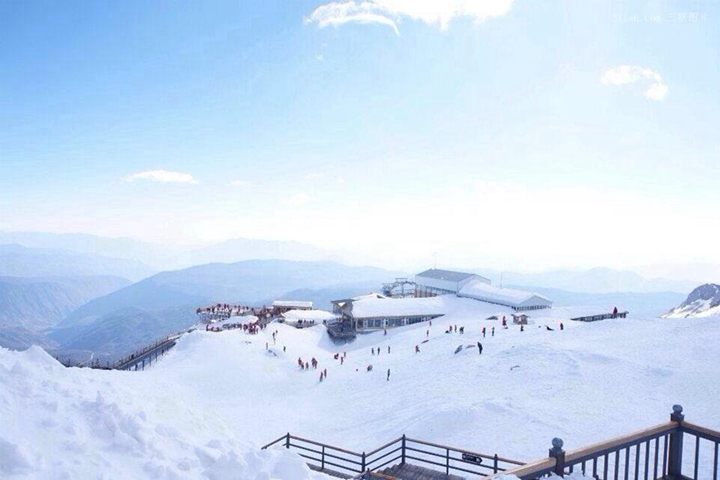
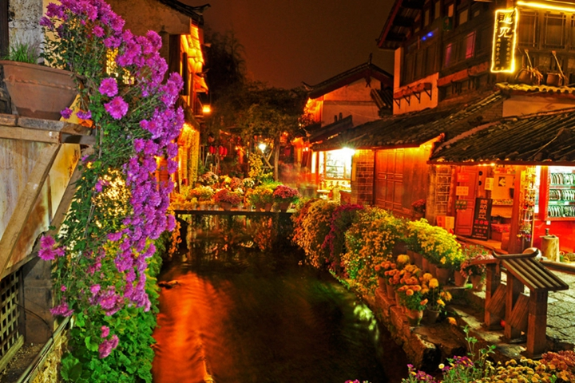
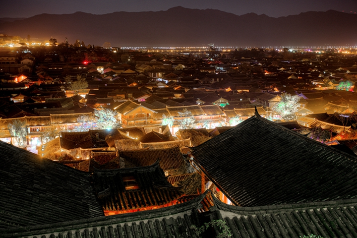
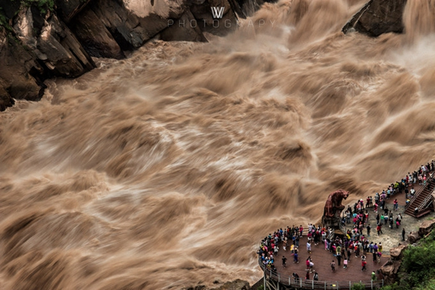

-
千风万景中遇见你 - 首页
- 精选
- 邂逅
- 消息
目的地>中国>丽江
Li Jiang
丽江
丽江天气
晴 15℃~22℃
152人来过这里
27篇旅游日志
27篇旅游日志
景点介绍
丽江地处滇西北高原，金沙江中游。以“二山、一城、一湖、一江、一文化、一风情”为主要代表，常年吸引着成千上万的游客到此。二山指的是玉龙雪山和老君山；一城为丽江古城，即大研古城；一江为金沙江；一文化指纳西东巴文化；一风情则为摩梭风情。
丽江，有“艳遇之都”之称。不知是因为丽江古城内的小桥流水成就了这样的风情，还是入夜后酒吧街上慵懒、魅惑的气质迷醉了多情的过客。大研古城的夜幕，迷幻而令人神往。 如果说一千个读者心中有一千个哈姆雷特，那么一万个游客心中有一万个丽江也不为过。
这座充斥了爱与奇遇的风情古城，承载着满满的情意与感性。也许是丽江古城内小桥流水人家的柔软风情让人在静谧中左思右想，抑或是夜晚风格各异的酒吧让人魅惑张扬。不过，无论是蓝天白云，雪山潺流，炊烟人家，还是风情酒吧，闲适的一切生物，这一切怎能不让人为她张望，为她痴狂。 我们来丽江，遇见自己，遗忘过往，漫步古城感受闲适光阴里的一花一木，让午后的一米阳光一下子照进心中最柔软的地方。
景点美照




- 2016-2017© 遇见网® yujian.com All rights reserved.Version v1.00
遇见网为旅行爱好者提供记录自己旅途见闻并展示的个人空间。